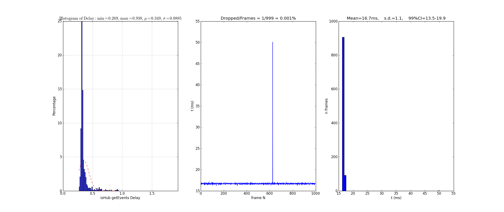

There are different aspects of ‘performance’ to consider when trying to determine the impact using ioHub within your experiment will have on both timing performance and the processing performance of your experiment.
Software and Hardware Considerations.
In the following discussions, it is assumed that PsychoPy is being used as the experiment runtime package and that a multicore (minimum two cores) or multiple CPU ( minimum 2 CPUs ) computer is being used. Multicore CPU’s are standard fair now, and have been for the last several years, so this is not that big of an assumption / requirement to make. ioHub has been designed to take advantage of this change in desktop level CPU design.
It should be noted that if psychopy and iohub are run together on a single core / single CPU (that only has one core) system, then performance will be much worse than discussed here. In this case, please consider upgrading your ancient computer to even a low to medium end modern computer (the cost can easily be under $750 USD) as for many reasons your experiments will be happier (not just for ioHub). If a multi processing unit computer can not be used, then not using ioHub should also be considered if the timing delays that are occurring on your computer are not acceptable. Run the ioHubAccessDelayTest example script to get a quick report of what the delays and impact on frame drops are.
When considering event time stamp accuracy, as defined as the difference between the time the event actually occurred in the environment and the time stamp that computer software has assigned to the event, the device type that generates the event is of obvious importance as is the device model being used. The factors that determine event time accuracy can be broken down into different components:
1. Delays introduced by the device hardware between when an event occurs and when the event representation is output by the device hardware to the Operating System.
1. Transport delay between when an event is sent by a device and when the event is received by the Operating System. This will be insignificant for some interface protocols, but can be of importance for others. (i.e. TTL transition delay is extremely fast and can be ignored for most research, while wireless network delay can be significant and variable).
1. Time required for the Operating System and related device driver(s) to register and process a device event, making it available to a user level API.
1. Delay between an event being made available to a user level API and when the software responsible for collecting and ‘using’ an event within an application actually processes the event itself.
From the above (perhaps incomplete) list of steps that a real world event goes through before the experiment software is able to respond or use the event representation iin some way, it should be clear that there is much room for event timing variability between device types and different device models of the same type, both in terms of the reported event time accuracy, and in terms of the ability for a software library like the ioHub to try and correct for / factor in the time each of these stages takes when it creates the normalized time stamps provided across all device types it is monitoring. Event time accuracy can vary from one msec or better, to 30 - 40 msec or more, depending on the device type and model in question.
In general, using the ioHub for device input access will provide the same or better timing accuracy than using the facilities provided by PsychoPy. This is a very general statement, and the experiments design goals and specific implementation will determine the degree to which any difference found would be significant, but there are a couple points that are of general consideration and support this claim:
#. In any experiment runtime package, there will be times during the experiment that the main experiment ‘thread’ is ‘blocked’ waiting for an operation to complete, such as when image, video, or sound files are loaded from disk.
#. In PsychoPy, and perhaps other stimulus presentation packages, calling window.flip() is a blocking operation that does not return until the start of the next video retrace period by the graphics subsystem being used ( OpenGL in this case ).
With this said, it should be emphasized that the current PsychoPy design has been implemented for some good reasons, namely to provide as accurate retrace onset timing as possible, and to make the mechanism that does this as robust as possible, regardless of Operating System. This is obviously a very important factor for an experiment runtime package to be able to provide, in many cases likely trumping the possible side effects it has on event time stamping and event reporting delay.
A final consideration is that when using Python threads to try and improve the granularity of how often a task is performed (for example checking for serial or TTL input states), all Python threads are run on a single CPU core, so no gain is made in terms of leveraging the extra n-1 cores that are present on a multicore CPU.
For further details on this subject, please refer to the documentation page for each device type supported by the ioHub.
When ioHub is used for event monitoring, all event detection (and even storage) is handled by a separate Python program that is running in a separate Python Process, utilizing a separate CPU core of a multicore CPU if desired (which it should be).
The ioHub is constantly either checking for new events from a device, or is being notified of new events as they are ade available by the underlying device driver / user level event API. The ioHub has been written to run as a non- blocking event server, meaning that no code that checks for new events on a device ‘waits’ until an event is available. For devices that need to be polled, a ‘peak’ and ‘get’ approach is always used instead. This results in any given operation that runs on the ioHub taking well under a msec, often under 100 usec. Therefore all devices are constantly being monitored with an average update interval of about 1 msec across all devices within the ioHub software itself. This means that event time stamping will occur within about 1 msec or less on average, relative to when the event was made available to the ioHub system. Further more, since the ioHub is running as a separate Python process, on a separate CPU core, much ‘more’ can be done with the events that are received than is normally feasible when event collection is handled by the same Python process that is responsible for all the really heavy work that an experiment runtime needs to handle. For example, ‘all’ events received by ioHub can be saved for later access and analysis, regardless of what events are being monitored for by the experiment process to gate experiment logic flow, or calculate reaction times etc. ioHub has been used to simultaneously save analog input data from eight channels of a DAQ device sampling all channels at 1000 Hz, while also saving all eye data from a 1000 hz eye tracking device, and making these events, as well as the events from other devices such as the keyboard and mouse, available to the PsychoPy experiment in real-time. This is done without any increase in frame drops or processing ability of the PsychoPy process.
So while overall CPU usage on a multicore system when using ioHub along with PsychoPy compared to running PsychoPy alone. This is because one core will be running at a high usage rate by the ioHub system, while a separate core will be running at the same, or potentially much lower utilization depending on the device set that is being monitored by ioHub , and would otherwise have to be handled by the PsychoPy experiment process alone. While admittedly this design will not win any awards for reducing power consumption of a PC, it will often result in new opportunities from an event processing perspective, something that is important for many research applications.
One of the primary goals of the ioHub is to try and ensure that it adds as little additional delay, or latency, to the events being delivered from devices to your experiment during data collection. This is critical for eye tracking paradigms in particular where gaze contingent manipulations want to be performed based on the eye data provided by the eye tracker device.
ioHub Round Trip Time for Event Retrieval, and PsychoPy Retrace Rate Monitoring
- LEFT Histogram of end to end delay from when the experiment runtime process requests any new events from the ioHub server process to when the experiment runtime has the reply from the ioHub and can access the new events that are available. For the purposes of this test, only delays are included when the reply from the ioHub server actually contained >= 1 new event.
- MIDDLE Time plot of inter flip calls made during the course of the ioHub delay test. The monitor was running at 60Hz, so any delay > than about 17 msec is a missed retrace period. You can see that during the test, one gap in display updates occurred, and it missed 2 retraces in a row.
- RIGHT Histogram of retrace times, using same data as the MIDDLE plot, but plotting it as a histogram instead of a time series.
Notes:
- Times are in msec.usec format.
- The y axis is the % of delays within that histogram bin.
- This data was collected on an Intel i5 mobile processor, 8 GB of RAM, in a Sony VAIO laptop (cost < $450 CAD).
- Windows 7 64 bit was used.
- Intel graphics drivers were active. (PsychoPy does not recommend this, but I was using a laptop so had no choice)
As can be seen, the delay added by the ioHub in these tests was minimal and would not significantly effect the performance of any gaze contingent eye tracking paradigm I am aware of given the fastest possible video based eye tracker delays available.